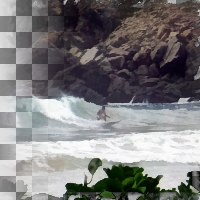

Symmetric Nearest Neighbour
Noise reducing edge preserving blur filter based on Symmetric Nearest Neighbours
Radius
Radius of square pixel region, (width and height will be radius*2+1)
name: radius
type: int
default: 8
minimum: 0
maximum: 100
ui-minimum: 0
ui-maximum: 40
ui-gamma: 1.50
ui-step-small: 1
ui-step-big: 5
unit:pixel-distance
Pairs
Number of pairs; higher number preserves more acute features
name: pairs
type: int
default: 2
minimum: 1
maximum: 2
ui-minimum: 1
ui-maximum: 2
ui-gamma: 1.00
ui-step-small: 1
ui-step-big: 2
pads: input output
parent-class: GeglOperationAreaFilter
categories: enhance noise-reduction
OpenCL
source: operations/common/snn-mean.c
 This page is part of the online GEGL Documentation, GEGL is a data flow based image processing library/framework, made to fuel GIMPs high-bit depth non-destructive editing future.
This page is part of the online GEGL Documentation, GEGL is a data flow based image processing library/framework, made to fuel GIMPs high-bit depth non-destructive editing future.